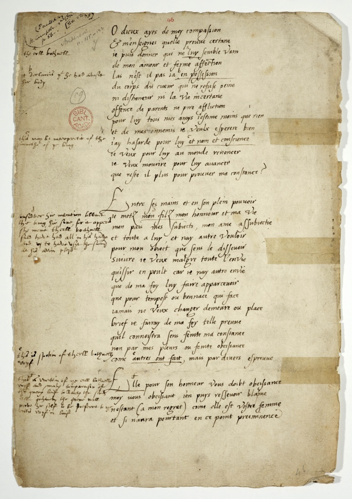
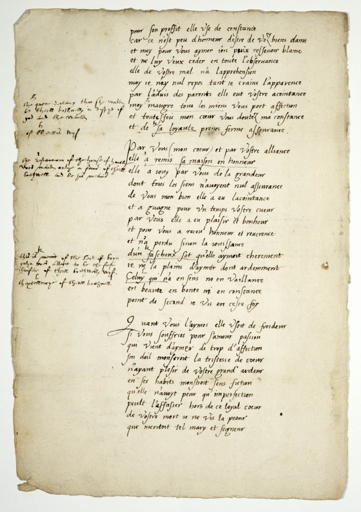
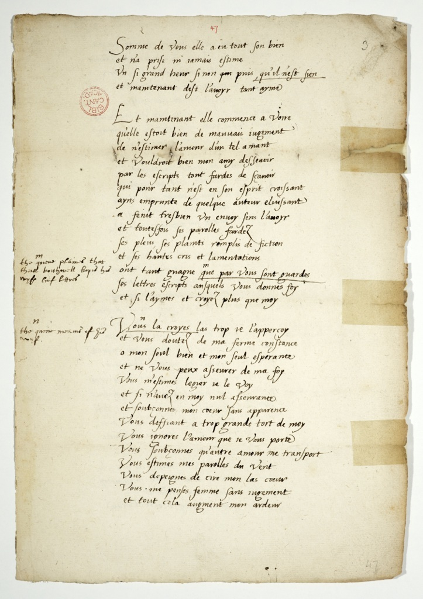
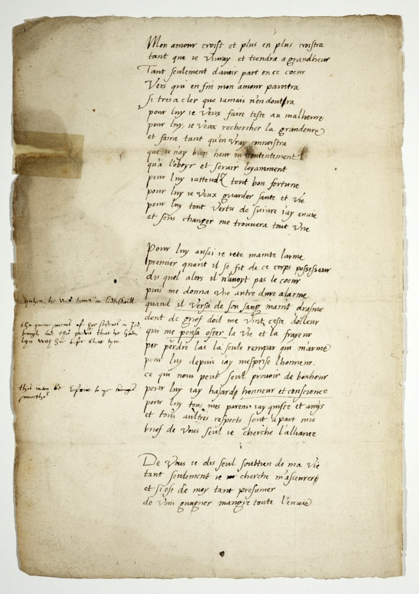
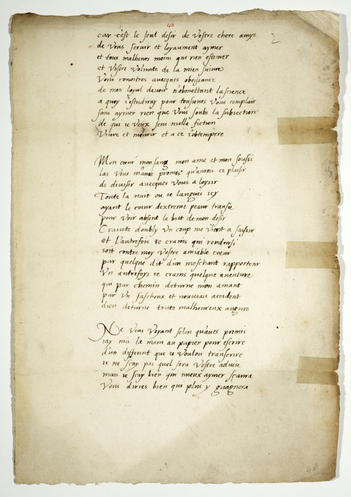

Select versions to display:
Cambridge Image
Cambridge Transcription
Cambridge Translation
Buchanan French Image
Buchanan French Transcription
Buchanan Scots Image
Buchanan Scots Translation
| Cambridge Images | Cambridge Transcription | Cambridge Translation | Buchanan French Images | Buchanan French Transcription | Buchanan Scots Images | Buchanan Scots Transcription |
|---|---|---|---|---|---|---|
|
[Catalogue details] |
||||||
|
[Front matter] |
||||||
|
[Title page] |
||||||
|  |
O dieux ayes de moy compassion & m’enseignes quelle preuue certane ie puis donner qui ne a luy semble vain a the erll bothwell de mon amour & ferme affection las n’est il pas ia b en possession b yt declairit yt he had abusit hir body du corps du cueur qui ne refuse peine ni dishonour ni la vie incertane offence de parents ne pire affliction pour luy tous mes amys iestime moins que rien et de mes ennemis ie veulx esperere bien i’ay hasarde pour luy c et nom et conscience c this may be interpretit of the murthe of yt king ie veux pour luy au monde renoncer ie veux mourire pour luy auancer que reste il plus pour prouuer ma constance?
Entre ses mains & en son plein pouuoir ie metz mon d filz mon honneur et ma vie d Considder hir intention ulvair the king hir sone, for it apperit she ment th’erll bothwell suld haue had all in his hads and by have use the s…d at his awin …. mon pais mes subiects , mon ame assubiectie et toute a luy , et nay autre voulloir pour mon obiect que sens le disseuoir suiure ie veux malgre toute l’envie qu’issir en peult car ie n’ay autre envie que de ma foy luy faire apparceuoir que pour tempest ou bonnace qui face iamais ne veux changer demeure ou place brief ie seray de ma foy telle preuue quil connoistra sens feinte ma constance non par mes pleurs ou feinte obeissance, come eautres ont fait, mais par diuers espreuue e this is spokin of therll bothwells wyf
fElle pour son honneur vous doibt obeissance f this is writtin of yt erll bothwells wyf and maks comparaison of the quenes luif to …arts the sins erll quhairby the queen will proue hir self to be prefurt to yt erlls wyf in luif moy uous obeissant i’en puys resseuoir blasme nestant (a mon regret) come elle est vostre femme et si n’aura pourtant en ce point preeminence |
O gods - have compassion on me, and teach me what certain proof I can give that doesn't seem vain to him, of my love and steadfast affection. Alas! Is not he already in possession of my body, a heart which does not refuse pain, nor dishonour, nor this uncertain life, insults from friends, nor direst affliction? For him, I value as less than nothing all my friends and I hope for the well-being of my enemies. For him I have risked this name and my conscience. I would renounce all the world for him; I would die to have him succeed. What more remains for me to prove my constancy?
Between his hands and into his complete power I place my son, my honour and my life, my country, my subjects, my soul, all subjugated to him, and I have as my goal no other wish which, without deceiving him, I want to follow in spite of all the envy that may ensue, for I have no other desire than to make him aware , of my faithfulness. So that regardless of whatever tempest or calm Never do I want to change dwelling or situation. Soon I will provide such proof of my faithfulness that he will clearly recognize my constancy without my dissimulation, not by my tears or pretended obedience, as others do, but through enduring various ordeals. She, for her honour, owes you obedience; I, obeying you, receive censure for not being (to my regret), as she is, your wife, and if she did not have, however, this pre-eminence, |
[Page 64r] O Dieux ayez de moy compassion, Et m’enseignez quelle preuue certain Ie puis donner qui ne luy semble vain De mon amour & ferme affection. Las n’est il pas ia en possession Du corps, du cœur qui ne refuse paine Ny deshonneur, en la vie incertaine, Offense de parentz, ne pire affliction? Pour luy tous mes amis i’estime moins que rien, Et de mes ennemis ie veux esperer bien. I’ay hazardé pour luy & nom & conscience: Ie veux pour luy au monde renoncer: Ie veux mourir pour luy auancer. Que reste il plus pour prouuer ma constance? |
[Page 65v] O Goddis haue of me compassioun, And schew quhat certaine profe I may geif, which shall nat seem to him vaine, Of my loue and feruent affectioun. Helas, is he nat alredy in possessioun Of my bodie, of hart, that refusis no payne, Nor dishonour in the life vncertaine, Offence of frendes, nor worse afflictioun, For him I esteme al my fre[n]ds les the[n] nathing, And I will haue gude hope of my enemeis. I haue put in hasard for him both fame & conscie[n]ce, I will for his sake renounce yt world, I will die to set him forwart. Quhat remayneth to gief proofe of my constancie?
In his handis and in his full power, I put my sonne, my honour, and my lyif, My contry, my subiects, my soule al subdewit, To him, and has none vther will For my scope, quhilk without deceit, I will folow in spite of all enuie That may ensue: for I haif na vther desire, But to make him perceiue my faythfulnes, For storme or fayre wedder that may come, Neuer will it chainge dwelling, or place. Schortly I sall geif of my trueth sic profe, That he sall know my constancie without fiction, Not by my weping, or faynit obedience, As other haue done: but by vther experience.
Sche for hyr honour oweth you obedience: I in obaying you may receiue dishonour, Nat being (to my displesure) your wife as she. Any yit in this poynt she shall haue na preheminence. Sche useth constancy for hyr awin profite: For it is na litle honour to be maistres of your goodes, And I for luifing of you may receiue blame, And will nat be ouercumme by hyr in loyall obseruaunce. Sche has no apprehension of your euyll, I feare so all appearing euill that I can haue na rest. Sche had your acqueintance by consent of hyr freindes, |
||
|  |
Pour son proffit elle vse de constance car ce n’est peu dhonneur destre de voz biens dame et moy pour vous aymer i’en puix resseuoir blame et ne luy veux ceder en toute l’obseruance elle de vostre mal n’a lapprehension moy ie nay nul repos tant ie crains l’apparence par l’aduis des parents elle eut vostre acointance Moy gmaugre tous les miens vous port affection g the queen declares that she wald be therll bothwells in despyt of god and the world et toutesfois mon cœur vous doutez ma constance (* line is missing from the print edition) et de hsa loyaute prenes ferme asseurance. h of the erlls wyf
Par vous (mon coeur) et par vostre alliance elle ia remis sa maison en honneur i the sytitution of the hous of h[----] now which onlye sonne of th’erll bothwell and befor married elle a iouy par vous de la grandeur dont tous les siens n’auoyent nul asseurance de vous mon bien elle a eu lacointance et a guagne pour vn temps vostre cueur par vous elle a eu plaisir en bonheur et pour vous a receu honneur et reuerence et n’a perdu sinon la iouissance d’un k fascheux sot qu’elle aymoit cherement k this is menit of the Lord of boyn quha now allegit to be the luifer of therll bothwells wyf ie ne la plains d’aymer dont ardemment Celuyl qui n’a en sens ne en vaillance l. the uptollonaye of therll bothwell en beaute en bonte ni en constance point de second ie vis en ceste foy
Quant vous l’aymes elle vsoit de froideur si vous souffries pour s’amour passion qui vient d’aymer de trop d’affection Son doil monstroit la tristesse de coeur n’ayant plesir de vostre grand ardeur en ses habits monstroit sens fiction quelle n’auoyt peur qu’imperfection peult l’affasser hors de ce loyal coeur de vostre mort ie ne vis la peaur que meritoit tel mary et seigneur |
for her advantage she makes use of her constancy as it is no little honour in being mistress of your wealth. As for me, I am censured for loving you and will not cede my position to her. She has no understanding of your predicament. For myself, I have no rest, fearing so much her falseness. She has your favour through the judgement of kith and kin. I, in spite of the views of all my friends, have affection for you and yet you doubt my heart, my constancy and of her loyalty are totally assured.
Through you (my beloved) and through union with you she has restored honour to her house. Through you she has enjoyed the splendour which her friends had not anticipated. With you, my benefactor, she has shared intimacy and has gained, for a time, your heart. Through you she has had pleasure and happiness and for you she has received honour and respect and has not sacrificed anything but the enjoyment of a tedious fool whom she once loved dearly. I don't pity her for loving so ardently the one who has no judgement, no courage, no beauty, no kindness nor constancy, secondly; I live assured of this.
When you love her , she responds with coldness. If you suffer for your passionate love, which comes from loving with too much affection, her refusal shows a miserable heart, not taking pleasure from your ardour. In her dress she showed truly that she had no fear that her deficiency could erase her from this loyal heart. I did not see* in her the fear of your dying, which would be due to such a husband and lord. |
[Page 64v] Entre ses mains & en son plein pouuoir Ie metz mon filz, mon honneur, & ma vie, Mon pais, mes subiectz, mon ame assubiectie Est tout à luy, & n’ay autre voulloir Pour mon obiect que sans le deceuoir Suiure ie veux malgré toute l’enuie Qu’issir en peult, Car ie n’ay autre enuie Que de ma foy, luy faire apperceuoir Que pour tempeste ou bonnace qui face Iamais ne veux changer demeure ou place. Brief ie seray de ma foy telle preuue, Qu’il cognoistra sans fainte ma constance, Non par mes pleurs ou fainte obeyssance, Co[m]me autres ont fait, mais par diuers espreuue.
Elle pour son honneur vous doibt obeyssance Moy vous obeyssant i’en puis receuoir blasme, N’esta[n]t, à mo regret, comme elle vostre femme. Et si n’aura pour tant en ce point préeminence. Pour son profit elle vse de constance, Car ce n’est peu d’honneur d’estre de voz biens dame Et moy pour vous aymer i’en puis receuoir blasme Et ne luy veux ceder en toute l’obseruance Elle de vostre mal n’a l’apprehension Moy ie n’ay nul repos tant ie crains l’apparence Par l’aduis des parentz elle eut vostre accointance Moy malgré tous les miens vous porte affection Et de sa loyauté prenez ferme asseurance. (note: 13 lines only)
Par vous mon cœur & par vostre alliance Elle à remis sa maison en honneur Elle à iouy par vous la grandeur Dont tous les siens n’ayent nul asseurance De vous mon bien elle à eu la constance, Et à gaigné pour vn temps vostre cœur. Par vous elle à eu plaisir en bon heur, Et pour vous à receu honneur & reuerence, Et n’a perdu sinon la iouyssance D’vn fascheux sot qu’elle aymoit cherement Ie ne la playns d’aymer donc ardamment, Celuy qui n’a en sens, ny en vaillance, En beauté, en bonté, ny en constance Point de seçonde. Ie vis en ceste foy.
Quant vous l’amiez elle vsoit de froideur. Sy vous souffriez pour s’amour passion Qui vient d’aymer de trop d’affection, Son doig monstroit, la tristesse de cœur N’ayant plaisir de vostre grand ardeur En ses habitz monstroit sans fiction Qu’elle n’auoit paour qu’imperfection Peust l’effacer hors de ce loyal cœur. De vostre mort ie ne vis la peaur Que meritoit tel mary & seigneur. Somme de vous elle à eu tout son bien Et n’à prisé ny iamais estimé Vn si grand heur si non puis qu’il n’est sien Et maintenant dit l’auoir tant aymé.
Et maintenant elle commence à voir Qu’elle estoit bien de mauuais iugement De n’estimer l’amour d’vn tel amant Et voudroit bien mon amy deceuoir |
[Page 66r] I against al thair will haue borne you affectio[n]. And nat the lesse (my hart) you doubt of my constance, And of hir faithfulness you haif firme assura[n]ce.
By you (my hart) and by your aliance Sche hath restored hyr house vnto honour, By you she is become to that greitnes, Of quhilk hyr freindis had neuer assurance, Of you (my wealth) sche got the acquentance, And hath conquest the same time your hart. By you sche hath pleasure and good lucke, And by you hath receiued honour & reuerence, And hath nat lost but the reioysance Of one vnpleasa[n]t foole, quhilk she louit deirly. Than I moane hyr nat to loue ardently Him that hath none in wit, in manhead, In beauty, in bounty, in truth, nor in co[n]stancy, Ony second: I lief in the beleif.
Quhen you louit hyr sche vsit coldnesse, Gif you suffrith for hir luif passioun, That commith of to greit affectioun of luif, Hyr sadnes schew the tristesse of hyr hart, Taking na pleasure of your veheme[n]t burning, In hyr clothing she schew vnfaynitly, That sche had na feir, that imperfection Could deface hyr out of that true hart. I did not see in hyr the feir of your death, That was worthy of sic husband and Lord. Schortly sche hath of you all hyr wealth. And hath neuer weyit nor estemit One so greit hap, but sins it was nat hirs, And now she saith that she loueth him so well.
And now sche beginneth to see, That sche was of veray euill iugement, To esteeme the loue of sic ane louer, And wald fayne deceiue my loue, By writinges and paintit learning, Quhilk nat the lesse did not breid in hir braine, But borrowit from sum feate authour, To fayne one sturt and haif none. And for all that hyr payntit wordis, Hyr teares, hyr plaintes full of dissimulation, And hyr hye cryes and lamentations Hath won that poynt, that you keip in store, Hir letters and writinges, to quhilk you geif trust, Ye, and louest and beleuist hyr more than me.
You beleue hir (helas) I perceiue it to well, And callist in doubt my firme constancie (O mine onely wealth, and my onely hope) And I can not assure you of my truth. I see that you esteeme me light, And be no way assurit of me, And doost suspect (my hart) without any appearing cause, Discrediting me wrangously. You do nat knaw the loue I beare to you. You suspect that vther loue transporteth me. You thinke my wordes be but wind: You paint my wery hart, as it were of ware, You imagine me an woma[n] without iugement. And all that encreaseth my burning.
My loue increaseth and more and more will increase, So lang as I shall lief, and I shall holde for ane greit felicitie To haue onely pairt in that hart, To the quhilk at length my loue sall appeare, So clearely, that he sall neuer doubt. For him I will striue against wan weard, For him I will recerfe greitnes, And sall do so mikle that he shall know That I haif no wealth, hap, nor contentation, |
||
|  |
Somme de vous elle a eu tout son bien et n’a prise ni iamais estime vn si grand heur si non qui puis, qu’il n’est sien et maintenant dist l’auoyr tant ayme
Et maintenant elle commence a voire qu’elle estoit bien de mauuais iugement de n’estimer l’amour d’un tel amant et vouldroit bien mon amy desseuoir par les escripts tout fardes de sçauoir qui pour tant n’est en son esprit croissant ayns emprunte de quelque auteur eluissant a feint tresbien vn enuoy sens l’auoyr et toutesfois ses parolles fardez ses pleus, ses plaints remplis de fiction et ses hautes cris et lamentations ont tant guagne mque par vous sont gardes m the queen plained that therll bothwell keped his wyfs luif letters ses lettres escripts ausquels vous donnes foy et si l’aymes et croyez plus que moy
Vousn la croyes las trop ie l’appercoy n the queen means of his wyf et vous doutez de ma ferme constance o mon seul bien et mon seul esperance et ne vous peux asseurer de ma foy vous m’estimes legier ie le voy et si n’auez en moy nul asseurance et soubçonnes mon cœur sans apparence vous deffiant a trop grande tort de moy vous ignores l’amour que ie vous porte vous soubçonnes qu’autre amour me transport vous estimes mes parolles du vent vous depeignes de cire mon las coeur vous me penses femme sans iugement et tout cela augment mon ardeur |
From you she has received all her prosperity and has not understood nor appreciated such good fortune, except when it was not there, and now she says she loves him so much. *(could possibly be "I do not live in fear of your dying" - je vis = I live and je vis = I saw, but the sense seems to favour the past historic)
And now she begins to see that she has exercised poor judgement in not valuing the love of such a lover and would wish to deceive my love through letters heavy with learning, which are nevertheless not the product of her fruitful mind, being borrowed from some glittering author; she has skilfully feigned a correspondence that is not hers. And yet her camouflaged words her tears, her complaints full of invention and her obsessive cries and lamentations have so much succeeded that you have kept her letters and writings, believing them, and so you love and believe her more than me.
You believe her, alas, I perceive it too well and you doubt my unswerving constancy O my only benefactor and sole hope! And I am unable to convince you of my faithfulness. You esteem me light, I see that, and so have no confidence in me and without cause doubt my heart. You greatly wrong me you ignore the love that I carry for you You suspect that another love transports me you value my words as mere air (wind) You trifle with my poor heart you think me a woman without judgement and all this only increases my ardour. |
[Page 65r] Par les escriptz tout fardez de sçauoir Qui pourtant n’est on son esprit croissant Ains emprunté de quelque autheur eluissant. A faint tresbien vn enuoy sans l’auoir Et toutesfois ses parolles fardez, Ses pleurs, ses plaincts remplis de fictions, Et ses hautz cris & lamentations, Ont tant gaigné qui par vous sont gardez Ses lettres escriptes ausquelz vous donnez foy Et si l’aymez & croyez plus que moy.
Vous la croyez, las trop ie l’apperçoy Et vous doutez de ma ferme constance, O mon seul bien & mon seul esperance, Et ne vous puis asseurer de ma foy Vous m’estimez legier qui le voy, Et si n’auez en moy nul asseurance, Et soupçonnez mon cœur sans apparence, Vous dessiant à trop grand tort de moy. Vous ignorez l’amour que ie vous porte, Vous soupçonnez qu’autre amour me tra[n]sporte, Vous estimez mes parolles du vent, Vous depeignez de cire mon las cœur, Vous me pensez femme sans iugement. Et tout cela augmente mon ardeur.
Mon amour croist & plus en plus croistra Tant que ie viuray, & tiendray à grandheur, Tant seulement d’auoir part en ce cœur Vers qui en fin mon amour paroistra Sy tres à clair que iamais n’en doutra. Pour luy ie veux recercher la grandeur, Et feray tant qu’en vray cognoistra, Que ie n’ay bien, heur, ne contentement, Qu’à l’obeyr & seruir loyaument. Pour luy iattendz toute bonne fortune. Pour luy ie veux garder santé & vie. Pour luy tout vertu de suyure i’ay enuie, Et sans changer me trouuera tout’ vne. (note: 13 lines only)
Pour luy aussi ie iette mainte larme. Premier quand il se fist de ce corps possesseur, Duquel alors il n’auoit pas le cœur. Puis me donna vn autre dur alarme, Quand il versa de son sang mainte dragme, Dont de grief il me vint lesser doleur, Qui m’en pensa oster la vie, & frayeur De perdre las le seul rempar qui m’arme. Pour luy depuis iay mesprisé l’honneur Ce qui nous peult seul pouruoir de bonheur. Pour luy i’ay hazardé grandeur & conscience. Pour luy tous mes parentz i’ay quité, & amis, Et tous autres respectz sont apart mis. Brief de vous seul ie cerche l’alliance.
De vous ie dis seul soustien de ma vie Tant seulement ie cerche m’asseurer, Et si ose de moy tant presumer De vous gaigner maugré toute l’enuie. Car c’est le seul desir de vostre chere amie, De vous seruir & loyaument aymer, Et tous malheurs moins que riens estimer, Et vostre volonté de la mien suiure. Vous cognoistrez auecques obeyssance De mon loyal deuoir n’omettant lasciance A quoy i’estudiray pour tousiours vous co[m]plaire, |
[Page 66v] But to obay, and serue him truely. For him I attend all gude fortune. For him I will conserue health and life, For him I desire to ensew courage, And he shall euer finde me vnchangeable.
For him also I powred out many tearis, First quhen he made himselfe possessor of thys body. Of the quhilk then he had nat the hart. Efter he did geue me one vther hard charge, Quhen he bled of his blude great quantitie, Through the great sorow of the quhilk came to me that dolour, That almost caryit away my life, and the feire To lese the onely strength that armit me. For him since I haif despisit honour, The thing onely that bringeth felicitie. For him I haif hazardit greitnes & conscience, For him I haif forsaken all kin and frendes, And set aside all vther respectes, Schortly, I seke the aliance of you onely.
Of you I say onely vpholder of my lyfe, I onely seke to be assuerit, Ye, and dare presume so much of my selfe, To win you in spite of all enuy: For that is the onely desire of your deir loue, To serue and loue you truely, And to esteme all wan hap lesse then nathing, And to follow your wyll wyth myne, You shall knaw wyth obedience, Not forgetting the knawlege of my leal deuty, The quhilke I shall study to the fine that I may euer please you. Louying nothyng but you, in the subiectioun Of quhome I wyll without any fictioun, Liue and die, and this I consent.
My hart, my bloud, my soule, my care, Helas you had promisit that I should haue that pleasure. To deuise wyth you at leysure. All the night quhair I lye and languishe here, My hart being ouerset wyth extreme feare Seing absent the butte of my desire. Feare of forgetting sometyme taketh me, And vther tymes I feare that louesum hart, Be not hardenit agaynst me By sum saying of ane wickit reporter, Vther tymes I feare sum auenture, That by the way should turne abacke my loue By sum troublous and new accident. O God turne abacke all unhappy augure.
Not seing you as you had promisit, I put my hand to the paper to write, Of ane differens that I haue willit copye. I can not tell what shalbe your iugement, But I knaw well quho can best loue, You may tell who shall winne maist. |
||
|  |
Mon amour croist et plus en plus croistra tant que ie viuray et tiendra a grandheur Tant seulement dauoir part en ce coeur vers qui en fin mon amour paroitra si tres a cler que iamais n’en doutlra pour luy ie veux faire teste au malheure (*this line is missing in the print edition) pour luy ie veux rechercher la grandeure et faira tant qu’en vray connoistra que ie n’ay bien heur ni contentement qu’a l’obeyr et seruir loyamment pour luy iattendz tout bon fortune pour luy ie veux guarder sante et vie pour luy tout vertu de suiure i’ay enuie et sans changer me trouuera tout vne
Pour luy aussi ie iete mainte larme premier quant il se fit de ce corps possesseur du quel alors il n’auoyt pas le coeur puis me donna vne autre dure alarme quand il versa de son sang maint drasme quhen he was hurt in liddesdail dont de grief doil me vint ceste dolleur qui me pensa oster la vie et la frayeur the quene monit of hir fortunes in God, enugh lies this prouit that he had lyn with her befor that tym por perdre las le seule rempar qui m’arme pour luy depuis iay mesprise lhonneur ce qui nous peut seul prouoir de bonheur pour luy iay hasarde honneur et conscience this may be Espied by yt feignid murthe pour luy tous mes parens iay quiste et amys et tous aultres respects sont a part mis brief de vous seul ie cherche l’alliance
De vous ie dis seul soubtien de ma vie tant seulement ie ne cherche m’asseurere et si ose de moy tant presumer de vous guagner maugre toute l’enuie. |
My love grows and more and more will grow while I live, and maintain its splendour so long as it is part of this heart, and in the end my love will appear so very clear that it will never be doubted. For him I will make a face at misfortune. For him I will gain court greatness and do so much, in truth, that he will know I am only happy and contented in obeying and serving him loyally. For him I expect all good fortune. For him I want to safeguard my health and life. For him I wish to follow virtue (be virtuous) and he will find me completely constant.
For him also I shed many a tear, the first when he made himself possessor of this body the heart of which he did not own. Then he distressed me further when he poured out so much of his blood, the grief of which caused me so much pain, that I thought to take my life due to the fear of losing, alas, the sole support that sustains me. For him since, I have spurned honour, the only thing which can give happiness. For him I have chanced honour and conscience For him I have abandoned all my kin and friends and all other concerns have set aside. In brief, with you alone I search for union.
Of you I say, sole support of my life, that I only search for ways to assure myself. And if I dare to presume so much, it is to win you, in spite of all envy; |
Sans aymer rien que vous, soubz la subiection De qui ie veux sans nulle fiction Viure & mourir & a ce i’obtempere.
Mon cœur, mon sang, mon ame, & mon soucy, Las, vous m’auez promis qu’aurons ce plaisir De deuiser auecques vous à loysir Toute la nuict, ou ie languis icy, Ayant le cœur d’extreme paour transy, Pour voir absent le but de mon desir Crainte d’oublir vn coup me vient à saisir: Et l’autre fois ie crains que rendurcie Soit contre moy vostre amiable cœur Par quelque dit d’vn meschant rapporteur. Un autre fois ie crains quelque auenture Qui par chemin detourne mon amant, Par vn fascheux & nouueau accident. Dieu detourne toute malheureux augure.
Ne vous voyant selon qu’auez promis I’ay mis la main au papier pour escrire D’vn different que ie voulu transcrire. Ie ne scay pas quel sera vostre aduis Mais ie scay bien qui mieux aymer scaura, Vous diriez bien que plus y gaignera.
|
|||
|  |
car c’est le seul desir de vostre chere amye de vous seruir et loyaument aymer et tous malheurs moins que rien estimer et vostre volunte de la mien suiure vous conoitres auecques obeissance de mon loyal deuoir n’obmettant la science a quoy i’estudiray pour tousiours vous complair sans aymer rien que vous soubs la subiection de qui ie veux sens nulle fiction viure et mourir et a ce i’obtempere
Mon cœur mon sang mon ame et mon soussi las vous m’aues promis qu’aurois ce plaisir de diuiser auecques vous a loysir Toute la nuit ou ie languis icy ayant le coeur dextreme peaur transie pour voir absent le but de mon desir Crainte doubly vn coup me vient a saisir et l’autrefois ie crains qui rendursi soit contre moy vostre amiable coeur par quelque dit d’un meschant rapporteur vn autrefoys ie crains quelque auenture qui par chemin deturne mon amant par vn fascheux et nouueau accident dieu deturne toute malheureux augure
Ne vous voyant selon qu’aues promis iay mis la main au papier pour escrire d’un different que ie voulu transcrire ie ne scay pas quel sera vostre aduise mais ie scay bien qui mieux aymer sçaura vous diries bien qui plus y guagnera
|
for it is the sole desire of your dear friend to serve you and faithfully love you, and to rate all my misfortunes as less than nothing, and to follow your will as my own. Through my obedience, you will know Of my loyal duty, not forgetting the understanding that I will study to please you always, loving nothing but you. With my surrendering to you, I wish, without any deception, to live and die, and to this, I submit.
My heart, my blood, my soul and my preoccupation! Alas! You have promised me that I would have the pleasure of spending my leisure with you all through the night, instead I am languishing here having my heart paralysed with fear to see absent the object of my desire. Fear of being forgotten comes to seize me like a blow and on other occasions I fear that your loving heart is set against me because of something said by a malicious rumour monger. Another time I fear some adventure which disrupts my lover's journey due to some unfortunate and unforseen accident May God forestall all such ill omens!
Not seeing you as you had promised, I put pen to paper to write differently to what I wanted to write. I don't know what your opinion will be, but I certainly know who knows best how to love; You would undoubtedly say the one who has more to gain |
{kind=link}
{kind=link}
{kind=link}
{kind=link}
{kind=link}
{kind=link}
{kind=link}
{kind=link}
{kind=link}
{kind=link}
{kind=link}
{kind=link}
{kind=link}
{kind=link}